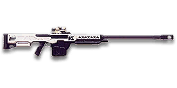

← Back to the NS-AM7 Archer comparison
Sage Guide · Nanite Systems · Engineer
An anti-materiel rifle for Engineers — it kills MAXes, damages vehicles, and one-shot headshots infantry to 53 m (90 m with its explosive payload). It is not an Infiltrator's sniper rifle, and this guide doesn't pretend it is.
Read this first — this gun is NOT a starter, and NOT an Infiltrator weapon. The NS-AM7 Archer costs 1,000 certs (or 799 Daybreak Cash) and can only be used by the Engineer — every faction's Engineer can buy it, no Infiltrator can. Your starter weapon is your faction's carbine. The Archer is a purchase you make because you want to hunt MAXes, not because you want to snipe.
The one-line verdict: the only primary in the game that hurts vehicles and deletes MAXes — 450 damage, a 1.75-second shot cycle, and an explosive round that arms past 30 m. Against infantry it's a slow, honest bolt-action; against a MAX it's the best gun an Engineer can carry.

The NS-AM7 Archer · Nanite Systems · 5-round magazine · 1,000 certs
Every section below folds shut — tap a heading to open it. Section 01 starts open, because it's the lesson that saves you the most deaths.
Picture the scene, because you've probably lived it: you're sprinting across a courtyard, an enemy appears, and you do everything at once — clicking as fast as your finger allows while you're still running, then press aim-down-sights (ADS) a split-second later, finger still working. The sight picture snaps in, it looks precise… and your bullets spray everywhere except the man in your crosshair. He kills you. It feels like the game cheated. It didn't — here's what actually happened.
Four beats, left to right — the same mistake the cards above describe, drawn out.
1 · SprintingYour cone starts maxed at 7.0° — the widest it can ever be.
2 · Trigger heldFiring from the hip while running — every shot adds bloom.
3 · ADS, mid-holdThe sight looks precise — but aiming down sights does not reset bloom.
4 · The sprayBullets fly out of the wide cone you built. The enemy walks away.
Same fight, done right. Each beat has a job, and the order is the whole lesson.
1 · StopLet go of sprint (and the trigger). About 0.3 s for the gun to settle.
2 · AimPress ADS and let the sight come up (~0.15 s).
3 · FireNow fire — from the aimed cone. First shots land where the dot points.
The exception — under ~8 m, skip the whole danceHipfire works, no ADS needed, and stopping is optional. Keep moving, strafe, and let the hipfire ring do the work.
You started firing from a sprint, from the hip. Sprinting is the least accurate state in the game: your cone of fire starts at 7.0° — fully bloomed, the widest it can ever be. Every shot you fire from the hip widens it further still (+1.0° per shot).
Then you pressed ADS mid-hold — and nothing reset. Aiming down sights does not shrink a cone of fire that is already bloomed. The scope only gives you a precise picture; the bullets keep flying out of the wide cone you built while running and hipfiring. That's the whole mystery: accurate-looking aim, wildly inaccurate gun.
Two timers stack the deck further: your gun needs about 0.3 s to settle after a sprint, and raising the sight itself takes 0.3 s with a 7x scope (0.2 s with a 4x). Trigger working through all of it means your first half-second of fire is pure confetti — and on this gun, with only 5 rounds and 1.5 s between shots, two wasted rounds are nearly half your magazine gone for nothing.
1 · Feet. Let go of sprint (and the trigger, if you're already holding it). Stop, or drop into a strafe — anything but a full sprint.
2 · Sight. Press ADS and let the sight come up. This takes a heartbeat — that's fine. You have no cloak and no overshield to hide behind, so the half-second of patience is your defence. A clean first shot is worth more than a rushed spray.
3 · Trigger. Now fire. Starting from the aimed cone of 0.05°, your first shot lands where the dot points — and the 1.5 s rechamber gives the cone time to reset fully before the next one.
Stop → aim → fire. If you take one habit from this entire page, take this one. You'll practise exactly this rhythm in the simulator in section 04.
Every enemy infantry has 1,000 health (500 shield + 500 health). Your bullet does 450 damage up close, fading to 250 at long range — NS-AM7 Archer damage. Headshots count ×2.4, leg shots count less (×0.9). The Archer fires anti-materiel rounds, not sniper rounds — Nanoweave's sniper-body-shot reduction does not apply the same way, so the chest count is the same against Nanoweave (the wiki's effectiveness table lists torso 3(3)). Leg shots are 3 normally, 4 against Nanoweave (wiki).
| Range | Damage | Head | Chest | Legs | Chest vs Nanoweave |
|---|---|---|---|---|---|
| Close · 0–25 m | 450 | 1 | 3 | 3 | 3 |
| One-shot headshot · 25–53 m | 450→418 | 1 | 3 | 3 | 3 |
| Splash-assisted · 53–90 m | 418→376 | 2 | 3 | 3 | 3 |
| Long · 90–127 m | 376→333 | 2 | 3 | 4 | 3 |
| Far · 127–200 m | 333→250 | 2 | 4 | 5 | 4 |
Perfect-accuracy times (direct damage only): 1 headshot = 0 ms to 53 m; 2 headshots = 1,750 ms beyond it; 3 chest shots = 3,500 ms to 127 m, 4 chest shots = 5,250 ms beyond it. Past 30 m every hit also deals up to 100 explosive splash damage — that carries the one-shot headshot out to about 90 m (376 × 2.4 = 902, plus 100 splash). Against a MAX (wiki): 2 headshots, or 4 torso shots. Against a shielded Heavy Assault (1,450 health): 2 headshots up close, 3 at range, or 4 chest shots up close and 6 at range.
This is the Archer's real job. Shots to kill by vehicle and facing — "on fire" thresholds are lower, because a burning vehicle keeps taking damage.
| Vehicle / facing | Shots to kill |
|---|---|
| Flash | 3 |
| Harasser | 8 |
| ANT | 12 |
| Lightning — rear | 10 |
| Lightning — side | 13 |
| Lightning — front / top | 15 |
| Sunderer | 19 |
| MBT — rear | 13–15 |
| MBT — front / top | 19–23 |
| ESF | 6 |
| Valkyrie | 6 |
| Liberator | 10 |
| Galaxy | 21 |
| Bastion weak point | 60 |
Against a MAX: 2 headshots, or 4 torso shots (5 against Nanoweave, per the wiki). Against infantry, the splash past 30 m is worth up to 100 extra damage — see the damage rule below.
Full power to 25 m, then a steady slide to minimum at 200 m. The headshot count is what matters — see the table above.
One gun, four fighting styles. The right technique changes with distance — use the range finder below to see what your bullets do at any range, then learn the four bands underneath it.
How to fight hereAim down sights at the head. Direct damage alone kills here — 450 × 2.4 is over 1,000. Hold your breath (Shift) and take the shot only when the crosshair is still.
Aim: centre of the chest, from the hip. Keep moving.
Scoping in costs you time and slows you down — at arm's length that gets you killed. But unlike every sniper rifle here, your hipfire is genuinely good (2.0° standing, 3.25° moving — the tightest in the class), so keep it truly close, strafe side to side (A/D) while firing, and let your 450-damage bullets do in three hits what a starter needs five for.
Aim: head. One aimed shot, then rechamber.
Inside 30 m the explosive payload does not arm — the round is a plain 450-damage bullet. One headshot still kills infantry, and a MAX takes 4 torso shots at any range. The 1.75 s cycle is the slowest here, so make the first shot count: hold your breath (Shift), shoot, and use the rechamber to reposition.
Aim: head. One aimed shot, then rechamber.
Past 30 m the payload arms and every hit deals up to 100 splash on top of the direct damage. The direct headshot kills to 53 m; the splash carries it to about 90 m. This is your best band against infantry — and the band where the MAX kill (4 torso shots) is most comfortable, because the MAX can't close on you in 1.75 s.
Aim: MAX torso, infantry head. One aimed shot, then rechamber.
Past 90 m the headshot stops one-shotting, so infantry takes two heads (1,750 ms apart) or 4 chest shots. Don't chase infantry here — hunt MAXes and vehicles instead. A Lightning's rear armour takes 10 shots, a Harasser 8, an ESF 6. Your bullets are slow (525 m/s) and drop 0.54 m by 200 m, so lead moving vehicles and hold over.
Your accuracy is decided by two things before skill even enters it: what your body is doing (your stance sets the starting cone of fire) and what your finger is doing (how you work the trigger). The NS-AM7 Archer is a bolt-action sniper rifle, so "firing modes" are something you do with your finger and the bolt — not a setting on the gun. And with a 6x scope or higher, a third thing matters: scope sway — the crosshair drifts, more the higher you zoom. Hold Breath (Shift by default) almost completely suppresses it; the Target Focus implant extends how long you can hold it.
| Stance | Starting cone | What it means for you |
|---|---|---|
| Sprinting | 7.0° | Maxed out — the widest the cone can be. This is the section 01 disaster: never start firing from a sprint. |
| Hipfire, moving | 3.25° | Walking or strafing from the hip. The tightest moving hipfire of any rifle here — fine inside ~15 m, leaks rounds past the target beyond it. |
| Hipfire, standing | 2.0° | Your point-blank default. The 0.28 m ring at 8 m in section 05 is this stance drawn out — the smallest hipfire ring in the class. Workable, and the reason this gun can defend itself up close. |
| Hipfire, crouched | 1.5° | The tightest hipfire you have (2.75° if you crouch-walk). Crouch when holding a doorway from the hip. |
| Aimed (ADS), feet planted | 0.05° | Standing or crouched still makes no difference here — a near-perfect point, not a cone at all, until the first shot's bloom. Crouch-walking while aimed is 0.15°. This is why section 01's order matters. |
| Aimed (ADS), strafing | 0.25° | That is the moving floor — the cone you start from while strafing aimed, before bloom adds 0.6° per shot. You move at 0.5× speed while aiming, same as every sniper, so strafe between shots to break their aim, not during them. |
| Mode | How your finger does it | Use it at |
|---|---|---|
| One shot, rechamber, re-acquire — the default | Click once, work the bolt (1.5 s), re-aim, click again | Everything. Each shot starts from the 0.05° aimed cone because the rechamber is long enough for the cone to reset fully. The skill is re-acquiring the target, not managing bloom. |
| Hold breath — the shot steadier | Hold Shift while aiming (hold-breath key) | Any shot past 50 m with a 7x scope or higher. Sway is magnified by the scope — holding your breath almost completely suppresses it. Release Shift while rechambering to stretch your breath across several shots. |
| Rushed shot — the mistake | Firing the instant the scope comes up, or firing before the cone settles | Nowhere. The scope takes 0.3 s to come up on a 7x, and firing early means the bullet leaves a cone that hasn't settled. One shot every 1.75 s means a rushed miss is a lost duel — and a lost MAX kill. |
A MAX 50 m away, aiming down sights. Click FIRE to shoot — one round, then the rifle rechambers for 1.5 s and the button locks until the next round is ready, exactly like the real gun. The cone resets fully during the rechamber, so every shot starts from the 0.05° aimed cone: the skill is re-acquiring the target, not managing bloom. One hit at a time. This practice window is shared by the whole Sage series: it is driven by a weapon profile plugged into the window — here the Archer's (1.5 s chamber, 0.05° starting cone, target at 50 m) — and the spread is drawn at true scale from those numbers.
Cone of fire — resets fully during the rechamber.
Your shots will be graded here — one hit at a time, with a full rechamber between them.
Some things are easier to show than to say. Here's what your bullets actually do: how wide hipfire spreads at 8 metres, what a good shot rhythm looks like, and what the scopes really change. The hands-on version — firing the shots yourself — is the practice window in section 04.
A full-size target 8 m away — an arm's-length room fight. The rings show where hipfire rounds land around your aim point (the chest). Sizes are drawn to scale from the gun's real cone-of-fire numbers.
Read it this way: standing still, the 0.28 m ring sits well inside the chest — most rounds hit a target this size, which is why hipfire works point-blank on this gun better than on any sniper rifle here. But move and it grows to 0.45 m — nearly as wide as the torso — so the edge rounds start leaking past him, and the rings only grow with distance while the man doesn't. Crouching tightens the ring to about 0.21 m (1.5°), and the Laser Sight to about 0.19 m. Past ~15 m that's rounds missing entirely: the exact moment to switch to aiming down sights, where the spread shrinks to a dot. (Ring sizes use the real geometry: spread diameter = 2 × distance × tan(cone ÷ 2).)
Every shot costs 1.5 s of rechambering. The cone resets fully while you work the bolt — the skill is putting the crosshair back on the target, not managing bloom. Same 2 shots, two very different outcomes:
The target pattern is one aimed shot, a full rechamber, and one more aimed shot. The cone resets while you work the bolt, so the extra bullets don't punish you — the lost aim does. The rechamber kicks you out of the scope on this gun (no straight-pull bolt), so use the 1.5 s to find the target again instead of firing blind. Two aimed shots beat four rushed ones — and your magazine is only 5 rounds.
At 150 m through the 7x scope, the target is big enough to place a headshot — and you still see the ground around him. Fast to aim, nothing blocks your edges. Scope-in is 0.3 s; hold your breath (Shift) for the shot.
Same target, same 150 m — but through the 12x scope he looks nearly twice as tall again, so placing shots on his head gets much easier. The price: your view narrows to the round window, the world outside the glass is gone, and the sway looks twice as big. Best past 100 m.
That's the whole 30-cert decision from section 06 in one picture: 7x for the fight you are in, 12x for the shot you are planning. Most veterans carry both and swap per base — 7x for open ground, 12x for the long lane.
Attachments are small multipliers, not new guns. The only ones that really change how this gun behaves are the ones that affect scope-in time, sway and your aim. Prices are in certs where the wiki lists them; anything unpriced is marked "check in-game" — it hasn't been verified here.
If no optic is chosen, this scope is attached. A clean 4x with a fast 0.2 s scope-in and a triple-chevron reticle.
Good: mid-range fights and MAX hunting, where the wider view keeps you aware of flanks.
Bad: the long lane past 150 m, where the target gets small and the head gets hard to place.
A second 4x option with the same fast scope-in. Buy it only if you want the Quadra's reticle instead of the built-in Tetra's.
Good: the same fights as the Tetra — it is a reticle preference, not a power upgrade.
Bad: spending 30 certs on a scope you already own in the Tetra.
The standard sniper magnification. Scope-in is 0.3 s and the sway is noticeable — hold your breath (Shift) for the shot.
Good: almost everything an Archer does — 30–150 m, where the splash-assisted headshot lives.
Bad: tight indoor rooms — the zoom makes close targets feel fast and huge.
More magnification for the longest shots. The sway looks bigger with every step up, and the scope-in stays 0.3 s.
Good: the 150–200 m lane, picking off stationary targets and distant MAXes.
Bad: any fight inside 100 m, where the 7x already covers you and the extra zoom only narrows your view.
This weapon does not have any barrel attachments at all — no suppressor, no flash suppressor. Your shots are loud and visible, and there is nothing to buy to change that.
Good: nothing to spend here — put the certs into your Engineer tool and suit instead.
Bad: stealth play — the Archer announces itself every time it fires.
A torch whose beam reveals cloaked infiltrators. Toggle it with the attachment key (X by default).
Good: hunting a stalker infiltrator camping your capture point — sweep corners with it.
Bad: as your everyday rail — it gives zero accuracy help, and the beam advertises your position.
Hipfire accuracy improves by a third (33% tighter cone). The only rifle here that can take a laser sight — and the only one whose hipfire is good enough to build around.
Good: indoor point-holds and stairwell fights where you hipfire inside 15 m.
Bad: open bases — you give up the straight-pull bolt for a bonus you rarely use.
Lets you chamber another round while aiming down sights — no more leaving the scope to work the bolt. The single biggest quality-of-life upgrade on this gun.
Good: almost always — staying scoped through the 1.5 s rechamber means you never lose the target between shots.
Bad: nothing meaningful. It only stops helping if you never aim down sights.
Four ready-made setups — pick one, buy the attachments, go fight. Nothing here needs more than the gun and the listed attachments.
0 certs attachments · Just bought the gun
What the 1,000 certs actually buy you. Genuinely usable — learn the gun on this before spending anything more. The 7x scope is your first 30 certs.
130 certs attachments · Recommended
The best value in this whole guide. Stay scoped through every rechamber, pick MAXes off at 30–90 m, and let the 4-shot torso kill do the work.
130 certs attachments · Vehicle harasser
Built to work vehicles at range and defend yourself up close — the laser sight covers the 15 m fight the straight-pull bolt doesn't.
200 certs attachments · All-rounder
The honest all-rounder is the MAX Hunter plus a Darklight in your pocket for stalker duty. One rail slot means one choice — the bolt wins it. (Straight-Pull Bolt + Darklight together is not possible: one rail slot. Add the Darklight later if you hunt stalkers.)
The gun is fine — your habits decide the fights. Six things to do on every engagement, in order.
A MAX takes 4 torso shots (2 headshots) from this gun, and no other primary can do it at all. Every MAX you see is your target: 4 shots, 5,250 ms of shooting, and a dead MAX. Infantry kills are a bonus. If you are ignoring MAXes to snipe infantry, you bought the wrong gun.
The cycle is 1.75 s: 1.5 s of chambering, 0.25 s of refire. Use the rechamber to re-aim, not to admire the hit. The cone resets fully while you work the bolt, so every shot starts at 0.05° — the skill is putting the crosshair back on the target, not managing bloom.
Rifles with 7x scopes and above have scope sway, and higher magnification magnifies it. Hold Shift to almost completely suppress the sway — and release Shift while rechambering, so one breath stretches across several shots. Without the Target Focus implant your breath is short; make the shot count.
A Lightning's rear armour takes 10 shots; its front takes 15. A Harasser takes 8, an ESF 6, a Sunderer 19. Always take the rear shot when you can — same 1.75 s per round, half again as many kills per magazine. And remember the splash arms past 30 m: closer than that, you are shooting a plain bullet.
Reloading with even 1 bullet left takes 3.0 s; an empty gun takes 4.25 s. That extra 1.25 s is the biggest empty-reload penalty of any rifle on this page — more than a second standing defenceless. Count roughly: after one MAX kill (4 rounds) or ~4 rounds, duck behind cover and reload early. Treat the last round as your emergency reserve, not your working magazine.
You're an Engineer, and the repair tool is your job — but a dead Engineer repairs nobody. When a MAX is shooting at you, the Archer comes first and the repair tool second: kill the threat, then get your MAX back up. Your rifle takes 1,000 ms to bring out, so never switch mid-duel — finish the fight with the gun in your hands. And repair your own MAX between shots: the rechamber is free time.
Every gun has a price. Here's where the NS-AM7 Archer pays — and the habit that covers each hole.
1.5 s of chambering plus 0.25 s of refire. A missed first shot costs you 1.75 s of kill time, and two misses in a duel hand it to the enemy. Against infantry this is the slowest gun on the page by a wide margin.
Play around it: hold your breath and re-acquire properly (habits 2 and 3). This gun forgives a bad position; it does not forgive a rushed shot.
Five rounds is one MAX kill and a spare. A sprayed pair of shots can leave you dry mid-fight, and the empty reload is the longest here.
Play around it: reload early and only in cover (habit 5). Your 3.0 s short reload is still slow — reloading often is the design, not a failure.
Vertical recoil 4 — by far the strongest of any rifle on this page — with a 15° recoil angle. The scope jumps off the target with every shot, which is why the rechamber exists: you need the time to get back on aim.
Play around it: pull your mouse straight down while firing, and let the 1.5 s rechamber do the settling for you. The Straight-Pull Bolt keeps you scoped while it happens.
525 m/s — the lowest velocity on the page. The bullet drops 0.54 m by 200 m and 1.22 m by 300 m, and moving targets need real lead. A MAX at 100 m is a full body-width of lead if it is strafing.
Play around it: hold over more than you think (section 03), and take the shot at stationary or slow targets. Your 1.75 s cycle punishes a miss twice: once for the time, once for the lead.
Infiltrators get a cloak to vanish after the shot. You get a repair tool and a turret. Once you fire, everyone knows where you are, and you cannot disappear — you have to reposition on foot.
Play around it: pick your firing position before the shot (habit 4), and move after every kill. Never fire twice from the same window.
Inside 30 m the explosive payload does nothing — the round is a plain 450-damage bullet, and the close-range infantry kill costs the same 3 chest shots as any bolt-action. The wiki's prose says 30 m; older guides say 25 m — either way, point-blank is the payload's dead zone.
Play around it: don't rely on the splash up close. Inside 30 m, aim for the head (1 shot) or don't take the fight at all — the hipfire is good, but the cycle is not.
Five drills, all in the VR Training room — no certs, no enemies, no pressure. About 15 minutes a session; do one set, then go fight.
In VR Training, find the MAX dummies. Put 4 torso shots into one — that is the kill. Repeat until 4 shots, 5,250 ms, dead MAX is automatic. Then try 2 headshots: same kill, half the time, if your aim holds.
At 50 m, kill dummies with one shot, a full rechamber, and one more shot — no rushing. Goal: every second shot lands, because you re-acquired instead of firing blind. Count the cycle out loud: shot, one-one-thousand, two-one-thousand, shot.
At 100 m with the 7x scope, hold Shift, shoot, release Shift while rechambering, hold Shift again for the next shot. Train the breath cycle until it is one motion: breathe out, hold, shoot, breathe in while the bolt works.
At 100–150 m, shoot the vehicle targets in the rear. Hold over for the drop (0.14 m at 100 m, 0.54 m at 200 m) and lead moving targets by a full body-width. Count your shots: Lightning rear is 10, Harasser is 8, ESF is 6.
Fire exactly 4 rounds, step behind a pillar, reload, repeat. Train your hands to reload early and only in cover until it's automatic — in real fights you'll do it without thinking, which is the point. Remember: a short reload is 3.0 s and an empty one is 4.25 s, so the last round is your emergency reserve, not your working magazine.